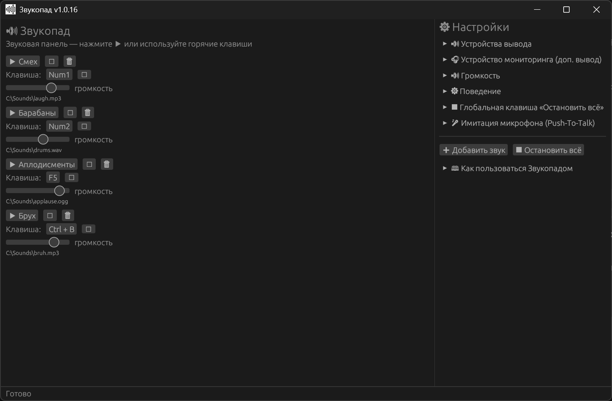

⌨️
Любые горячие клавиши
Назначайте на звуки одиночные клавиши или комбинации: Numpad1, F5, Space, Ctrl+Shift+F. Хоткеи работают глобально — даже когда окно Звукопада свёрнуто.
Бесплатно • Open Source • Windows 10/11
Звукопад — бесплатная звуковая панель для Windows и открытая альтернатива Soundpad. Запускайте звуки
горячими клавишами, выводите их сразу на два устройства, слышите себя через мониторинг и
автоматически «зажимайте» PTT-клавишу в Discord или игре. Один портативный .exe,
без установки и подписок.

Возможности
Звукопад объединяет в себе звуковую панель, менеджер горячих клавиш и инструмент для стриминга. Ниже — основные функции саундпада для Windows, которые доступны сразу после запуска.
Назначайте на звуки одиночные клавиши или комбинации: Numpad1, F5, Space, Ctrl+Shift+F. Хоткеи работают глобально — даже когда окно Звукопада свёрнуто.
Основной выход — для Discord, OBS или игры через VB-Cable. Второй — мониторинг в наушники, чтобы слышать звук самому. Работают одновременно.
Звукопад автоматически зажимает вашу push-to-talk клавишу на время воспроизведения. Discord и игры думают, что вы говорите, и пропускают звук.
Одна горячая клавиша мгновенно останавливает все звуки. Удобно, если нужно срочно выключить музыку или шум во время стрима.
Отдельные ползунки громкости для каждого файла, мастер-громкость и независимая громкость мониторинга. Изменения применяются мгновенно.
Один exe без установщика. Настройки и список звуков хранятся в %APPDATA%/zvukopad/ и подхватываются при следующем запуске.
Подробный разбор
Если коротко: Звукопад — это soundboard для Windows, который умеет проигрывать звуки по хоткеям, отправлять их в микрофон через виртуальный кабель и дублировать в наушники. Ниже те же возможности описаны подробнее и в разных сценариях.
Добавляйте mp3, wav, ogg, flac, m4a и aac, задавайте имя и горячую клавишу. Звукопад — это простая звуковая панель, где каждый файл запускается с клавиатуры. Повторное нажатие перезапускает звук или накладывает его — поведение настраивается.
Выберите CABLE Input как основное устройство, а в Discord/OBS/игре укажите микрофон CABLE Output. Так звуки из Звукопада попадают в голосовой чат, стрим или игровой чат. Это классическая схема «soundpad + VB-Cable».
Второе устройство вывода позволяет слышать то же, что слышат собеседники. Мониторинг можно включить или выключить, а его громкость регулируется отдельно от основного выхода — чтобы не оглушить себя.
Укажите клавишу голосового чата (V, X, CapsLock, Numpad0). Во время звука Звукопад нажмёт и удержит её через Windows SendInput, а после окончания отпустит с задержкой. Это помогает в играх и Discord, где микрофон открывается только по push-to-talk.
Мастер-громкость, громкость каждого звука и отдельная громкость мониторинга. Ползунки работают без перезапуска воспроизведения, а значения сохраняются в конфиге. Это удобно для стримеров и тех, кто часто меняет уровень звука.
Кнопка «Остановить всё» и глобальный хоткей останавливают все активные звуки одним действием. Функция пригодится, если нужно быстро прекратить музыку, шум или длинную запись.
Звукопад написан на Rust с GUI на egui/eframe, использует rodio для аудио и global-hotkey для системных клавиш. Это открытый проект под MIT: код можно изучить, собрать самостоятельно или предложить улучшения.
Быстрый старт
Загрузите zvukopad.exe с GitHub Releases. Установка не нужна — просто запустите файл.
Один раз установите бесплатный VB-Audio Virtual Cable. В Звукопаде выберите CABLE Input, а в Discord или игре — CABLE Output.
Нажмите «Добавить звук», выберите файл и назначьте горячую клавишу. Готово — звук можно запускать из любого приложения.
Сценарии
Звуки, мемы и музыка в голосовом чате CS2, Dota 2, Valorant, WoW. PTT-имитация помогает там, где микрофон открывается только по клавише.
Быстрые звуковые вставки, кнопка «Стоп всё» и отдельная громкость мониторинга. Работает вместе с OBS и Discord.
Саундпад для Discord: звуки уходят в микрофон через виртуальный кабель, а вы слышите их в наушниках.
Атмосферные звуки, музыка и эффекты по горячим клавишам — без переключения окон и сложных настроек.
Сравнение
Звукопад — бесплатный аналог Soundpad для Windows. Вот ключевые отличия в возможностях и подходе.
| Возможность | Звукопад | Soundpad |
|---|---|---|
| Цена | Бесплатно, 0 ₽ | Платная лицензия |
| Открытый исходный код | Да, MIT | Нет |
| Горячие клавиши | Да, любые комбинации | Да |
| Два устройства вывода | Да, основной + мониторинг | Ограниченно |
| PTT-имитация микрофона | Да, через SendInput | Нет в базовой версии |
| Глобальное «Стоп всё» | Да | Да |
| Портативный exe | Да, без установки | Требуется установка |
| Русский интерфейс | Да | Зависит от версии |
Сравнение носит ознакомительный характер. Soundpad — товарный знак соответствующего владельца.
Технологии
Звукопад — лёгкое нативное приложение для Windows, написанное на Rust. Без Electron, без тяжёлых зависимостей и без телеметрии.
Платформа: Windows 10 и Windows 11. Для передачи звука в другие приложения рекомендуется VB-Audio Virtual Cable.
FAQ
Да. Звукопад полностью бесплатен, распространяется по лицензии MIT и имеет открытый исходный код. Скачать можно с GitHub Releases.
Для передачи звука в Discord, OBS или игры нужен виртуальный аудиокабель VB-Cable. Это бесплатная программа, устанавливается один раз. В Звукопаде выберите CABLE Input, а в приложении-получателе — CABLE Output.
Да, это портативный single-exe. Достаточно скачать zvukopad.exe и запустить. Настройки сохраняются в %APPDATA%/zvukopad/.
Звукопад бесплатный, с открытым кодом, поддерживает два устройства вывода, мониторинг, PTT-имитацию микрофона и глобальную кнопку «Стоп всё». Это лёгкий портативный аналог Soundpad для Windows.
Да. Звукопад работает как обычное приложение Windows и использует SendInput для PTT-имитации. В большинстве игр и в Discord звук передаётся через виртуальный кабель. Некоторые анти-читы могут блокировать синтетический ввод — это ограничение Windows, а не Звукопада.
mp3, wav, ogg, flac, m4a и aac. Файлы добавляются через системный диалог выбора.
Бесплатная звуковая панель для Windows. Без установки, без подписки, с открытым кодом. Если проект помогает — поддержите автора донатом ❤